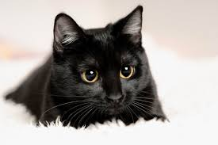

Cats are small, carnivorous mammals that are often kept as pets. They are known for their agility, independence, and playful behavior.
Cats have been associated with humans for thousands of years and are often appreciated for their ability to hunt rodents.
Cats communicate with humans and other animals using various sounds, including meows, purrs, and hisses.
cats clicked: 0/2
Back to Main Page